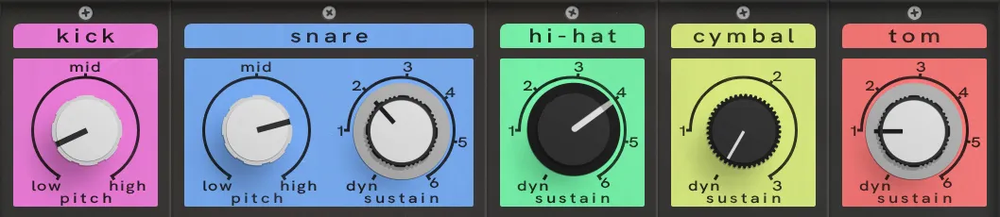
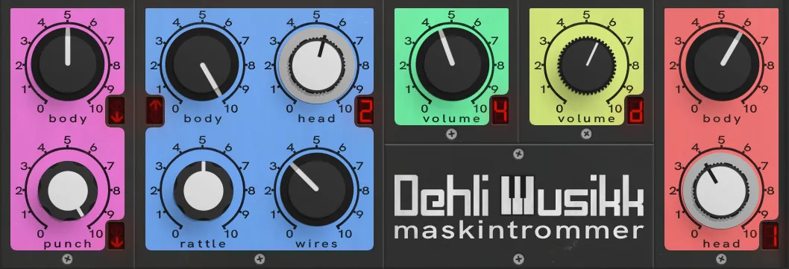
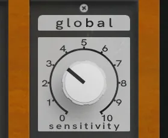
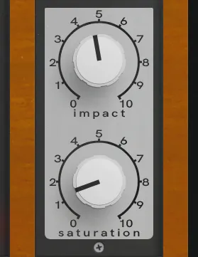
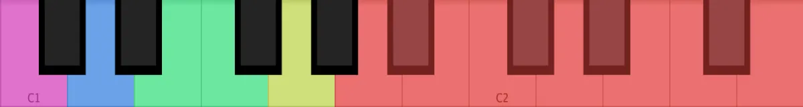
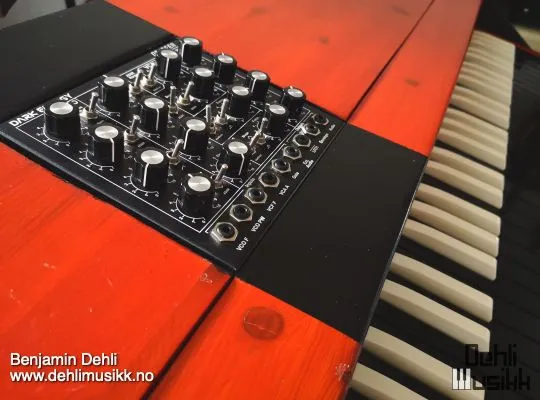
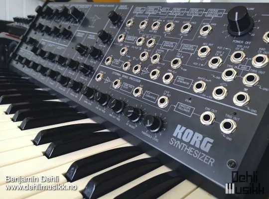
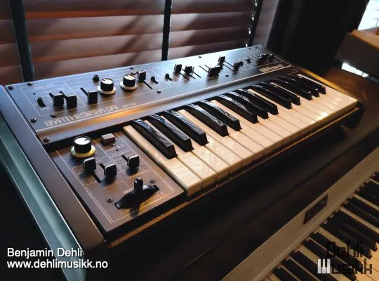
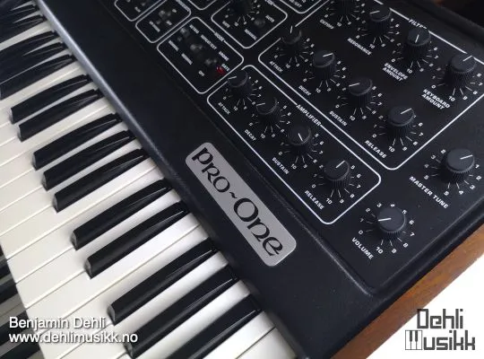

Video
A demonstration of the MaskinTrommer library for Decent Sampler.
Included formats
- VST3 (macOS)
- AU (macOS)
- Standalone application (macOS)
- Decent Sampler (macOS, Windows and Linux)
The plugin version is currently released for macOS only. Windows and Linux versions are planned. Until then, the Decent Sampler version covers those platforms.
The plugin version
The plugin is a self-contained instrument, available as VST3, AU and Standalone. Samples, graphics and impulse responses are all embedded in the plugin itself, losslessly compressed, so there are no external files to install or locate.
The plugin has all the controls and features from the Decent Sampler version, including MIDI learn, the master volume fader with output meter, value readouts for the knobs and full DAW automation. On top of that, the plugin version adds:
- Drift wheels next to the pitch and modulation wheels, adding a subtle random pitch and volume drift to each voice.
- A velocity curve setting in the settings menu.
The Decent Sampler version
This version of Maskintrommer is an instrument preset / sample library for Decent Sampler. If you're new to Decent Sampler, I recommend checking out this guide first.
Technical specification
| Sample rate | Bit depth | Channels | Number of files | File size | |
|---|---|---|---|---|---|
| Samples (Kick) | 48 kHz | 24 bit | 1 (mono) | 32 | 1.5 MB |
| Samples (Snare) | 48 kHz | 24 bit | 1 (mono) | 78 | 16.5 MB |
| Samples (Hi-hat) | 48 kHz | 24 bit | 1 (mono) | 72 | 5.9 MB |
| Samples (Cymbal) | 48 kHz | 24 bit | 1 (mono) | 24 | 5.2 MB |
| Samples (Tom) | 48 kHz | 24 bit | 1 (mono) | 136 | 39.3 MB |
User Interface
The interface is divided into two main areas:
- Left section: Individual drum controls and sample mixer
- Right section: Global settings and effects
The keyboard at the bottom is color-coded to match each drum section, making it easy to identify the mapping.
Drum Settings

The top row of knobs in each drum section controls the primary sound-shaping parameters.
Pitch (Kick & Snare)
- Adjusts the tuning of the drum.
- Turning clockwise raises the pitch.
- Turning counterclockwise lowers the pitch.
- Affects both sample types for the kick and the "body" samples for the snare.
Sustain (Snare, Hi-Hat, Cymbal, Tom)
- Controls which sustain-length samples are triggered.
- For snare and tom, it only affects the "head" samples.
- Lower values select shorter, tighter sounds.
- Higher values select longer sustaining samples.
- Dyn (Dynamic) mode:
- Higher MIDI velocity → longer sustaining samples
- Lower MIDI velocity → shorter sustaining samples
This allows expressive control directly from performance dynamics.
Drum Mixer

The second and third rows of knobs in each drum section form the sample mixer.
Each knob controls the volume of a specific sample type for that drum. The knob design visually represents which synthesizer the samples originate from.
Sample Type Blending
- You can blend multiple synthesizer sources for a single drum.
- Each active source contributes its own round robin variations.
- Combining sources dramatically increases variation and complexity.
Display Indicators
Some mixer knobs include a small display. The display shows how the samples assigned to that knob are influenced by either pitch (kick & snare) or sustain (snare, hi-hat, cymbal & tom).
This provides quick visual feedback when shaping the sound.
Global Settings

Located in the rightmost section.
Sensitivity
Controls how strongly MIDI velocity affects sample volume.
- Lower values → More consistent volume regardless of velocity
- Higher values → Greater dynamic range
This allows you to tailor the instrument to your playing style or sequencing needs.
Global Effects

Impact
Controls the level of the transient (initial attack) relative to the sustain portion.
- Higher values → Louder attack, quieter sustain
- Lower values → More even balance between attack and body
This is useful for tightening drums or making them cut through a mix.
Saturation
A volume-compensated overdrive/distortion effect.
- Adds harmonic content and edge.
- Maintains perceived loudness while increasing intensity.
- Suitable for subtle coloration or more aggressive processing.
Keyboard Layout

The on-screen keyboard is color-coded to match the drum sections:
- Kick (pink): C1
- Snare (blue): D1
- Closed hi-hat (green): E1
- Open hi-hat (green): F1
- Cymbal (yellow): G1
- Tom (red): A1 to G2
This makes it easy to identify which keys trigger which drums, especially during performance.
Equipment used

Doepfer Dark Energy
Korg MS-20
Roland SH-09
Sequential Circuits Pro-One
Release notes
Version 2.1.02026-08-01
The changes in this release apply to the plugin version only. The DecentSampler version is unchanged.
- Added a translucent overlay graphic on top of the interface.
- Keys that are hovered or held on the keyboard are now shaded in a neutral way instead of turning yellow:
- White keys turn darker.
- Black keys turn brighter.
- The computer keyboard keeps playing notes even while you adjust a control with the mouse.
- Whole number controls now snap to each step. Chosen steps can also show a name instead of a number, for example step 0 shows as dynamic, both in the value readout and as automation values in your DAW.
Version 2.0.02026-07-19
- Added a plugin version. See the section "The plugin version".
- Added the missing round robins (takes 09 and 10) to the three snare sets.
- Restored the round robin order for the cymbal samples.
- The Impact control now targets its effect by index, fixing the gain binding.
- Removed the unused generic kick tag and some empty leftover blocks.
Version 1.0.02026-03-01
- First version released.
About this repository
This repository contains the source for both the Decent Sampler library (the DecentSampler folder) and the plugin version. The plugin is a thin wrapper around the shared Dehli Musikk sampler engine, and a converter translates the Decent Sampler library into the engine's native preset format at build time. The audio files are not part of this repository, since the samples are a paid product. The full version is available from store.dehlimusikk.no.